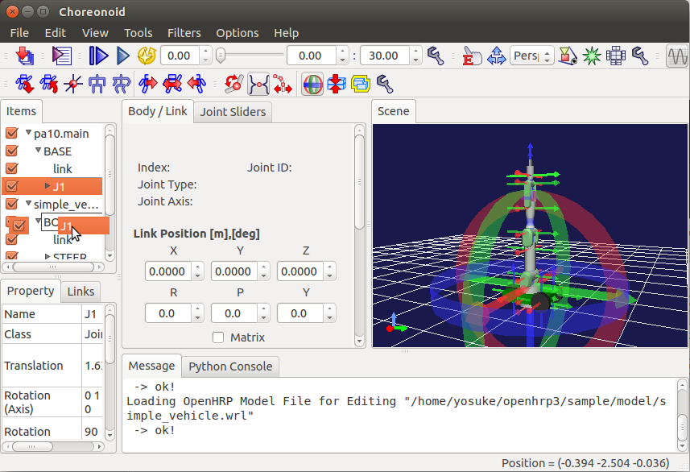

Choreonoidモデル編集機能チュートリアル¶
2つのロボットを接続する¶
この例では、アーム型のロボット(PA10)と車輪型のロボットを接続して、移動型のアームロボットを作成します。
まず、アーム型のロボットを読み込みます。
メニューから「File > Open ... > OpenHRP Model File for Editing」を選択してください。
警告
ここではメニューから「OpenHRPモデルファイル」ではなく「OpenHRP Model File for Editing」を選択するように注意してください。
ダイアログが開くのでOpenHRPのサンプルフォルダから「pa10.main.wrl」ファイルを選択してください。
アームロボットがロードできました。各アイテムの横のチェックボックスをオンにすることで、ロボットの外観がシーンパネル上で確認できます。
車輪型のロボットも読み込みます。
メニューから「File > Open ... > OpenHRP Model File for Editing」を選択してください。
ダイアログが開くのでOpenHRPのサンプルフォルダから「simple_vehicle.wrl」ファイルを選択してください。

アーム型ロボットを台車に接続するために、PA１０モデルの「J1」アイテムをクリックしてドラッグし、simple_vehicleモデルの「BODY」アイテムの上でドロップしてください。
アーム型ロボットに関するアイテムを右クリックすることで消去します。

モデルアイテムをクリックしてメニューから「File > Save Selected Item As」を選択してVRML形式でモデルをセーブしましょう。